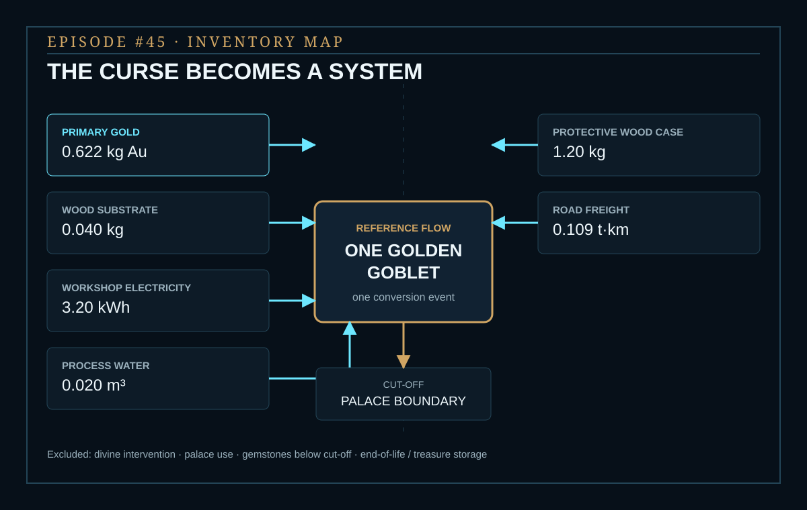
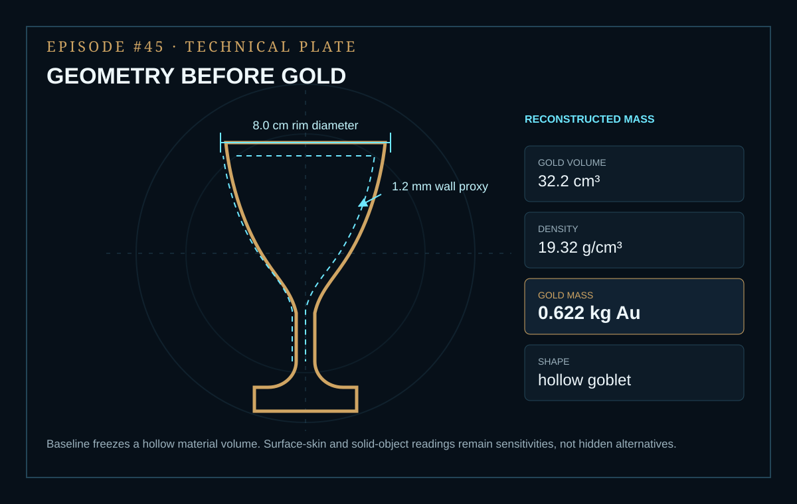
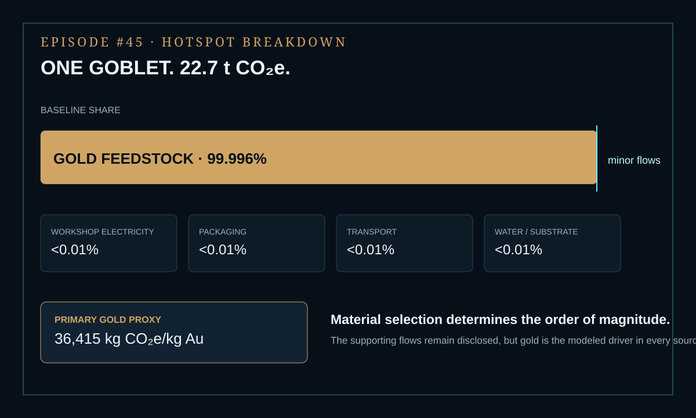

EPISODE #45 · MYTHS & LEGENDS
The Touch of King Midas
If one touch turns a small ceremonial goblet into gold, where does the climate burden land when the miracle itself is excluded?
THE SUBJECT
A small cup. A heavy consequence.
The approved episode models the golden touch as one physically equivalent object: a small ceremonial goblet converted into gold, visually intact and delivered inside the palace boundary. The functional service is one touch-converted ceremonial goblet in one conversion event.
The supernatural intervention is not assigned an invented energy flow. Instead, the model substitutes a conventional production proxy for the material consequence: primary gold production, the wooden substrate, casting and finishing electricity, a protective wooden case, short road delivery and process water. Palace use, gemstones below cut-off, end-of-life or treasure storage and the divine intervention itself remain excluded.
Frozen geometry
8.0 cm rim diameter, 1.2 mm wall proxy and 32.2 cm³ of reconstructed gold volume.
Reference flow
Gold density of 19.32 g/cm³ gives a reconstructed gold mass of 0.622 kg.
Main hotspot
Gold feedstock contributes 99.996% of the baseline footprint before minor flows are visible.
Proxy disclosure
DEFRA has no representative gold production factor, so the 36,415 kg CO₂e/kg Au factor is declared as a proxy and stress-tested.
VISUAL MODEL
The curse becomes a system
The miracle itself is excluded. The public model follows the material consequence from primary gold supply through casting, finishing and protected delivery to the palace boundary.


LIFE CYCLE INVENTORY
Every touch needs a flow
Activity data and factors reproduce the approved episode. Climate-change contributions below are direct arithmetic from the published quantities and factors and are shown only at justified precision.
| Stage | Component / activity | Activity data | Climate change | Modelling basis |
|---|---|---|---|---|
| Material supply | Primary gold | 0.622 kg | ≈22,650 kg CO₂e | Declared proxy · 36,415 kg CO₂e/kg Au. |
| Substrate | Wooden cup substrate | 0.040 kg | ≈0.011 kg CO₂e | UK Government 2026 primary wood · 0.26950 kg CO₂e/kg. |
| Workshop | Casting + finishing electricity | 3.20 kWh | ≈0.58 kg CO₂e | UK Government 2026 electricity + T&D + WTT · 0.18077 kg CO₂e/kWh. |
| Packaging | Protective wooden case | 1.20 kg | ≈0.32 kg CO₂e | UK Government 2026 primary wood · 0.26950 kg CO₂e/kg. |
| Delivery | Road freight | 0.109 t·km | ≈0.011 kg CO₂e | UK Government 2026 HGV freight · 0.10356 kg CO₂e/t·km. The activity is based on 1.862 kg transported for 60 km. |
| Finishing | Process water | 0.020 m³ | ≈0.007 kg CO₂e | UK Government 2026 water supply + treatment · 0.36218 kg CO₂e/m³. |
Included
Primary gold production; wooden cup substrate; casting and finishing electricity; protective wooden case; short road delivery; process water.
Excluded
Divine intervention; palace use phase; gemstones below cut-off; end-of-life or treasure storage.
Cut-off event
The model stops when the object reaches the palace.
Proxy disclosure
DEFRA has no representative gold production factor. The gold factor is therefore declared as a proxy and receives a dedicated sensitivity.
HOTSPOT
Gold decides the order of magnitude
Gold feedstock contributes 99.996% of the baseline. Workshop electricity, packaging, transport and water/substrate each remain below 0.01%.

Main result
22.7 t CO₂e
Baseline footprint per touch-converted ceremonial goblet.
Gold feedstock
99.996%
The material dominates before supporting flows are visible.
Minor flows
<0.01%
Combined supporting-flow share remains negligible relative to gold.
Gold mass
0.622 kg Au
A hollow object becomes a heavy upstream metal flow.
Shape sensitivity
Surface-skin touch → 0.020 t CO₂e
Baseline hollow body → 22.7 t CO₂e
Solid-object curse → 184.3 t CO₂e
The reported physical-interpretation range is 9,250×. The gold factor and supporting-flow assumptions remain fixed.
Gold-source sensitivity
1,496 kg CO₂e/kg Au → 0.932 t CO₂e
36,415 kg CO₂e/kg Au → 22.7 t CO₂e
55,000 kg CO₂e/kg Au → 34.2 t CO₂e
Changing the gold source factor moves the total by more than one order of magnitude without changing the hotspot.
Mass is destiny
The reconstructed cup needs 0.622 kg of gold before energy is counted.
The factor matters
Gold has no DEFRA factor in the approved episode, so the declared proxy is stress-tested explicitly.
Minor flows stay visible
Electricity, packaging, freight and water remain disclosed even below 0.01%.
A material lesson
The wish creates a commodity problem, not an energy miracle.
THE VERDICT
The curse is small in gesture, enormous in material.
A small high-value object can carry a large upstream footprint when its material is carbon intensive.